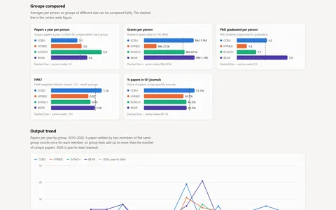

Client projects
Freelance research and data work
For UPM SPERC research centre, UiTM’s Faculty of Chemical Engineering and UPM’s Department of Chemical and Environmental Engineering.

A research database and dashboard for UPM’s SPERC research centre
I merged 3,312 publication rows, plus grants, awards and consultancy, into one database and dashboard, then counted 565 unique papers for the centre’s 2027–2030 strategic plan.
Python · Excel · HTML · CSS · JavaScript
See the database and dashboard →